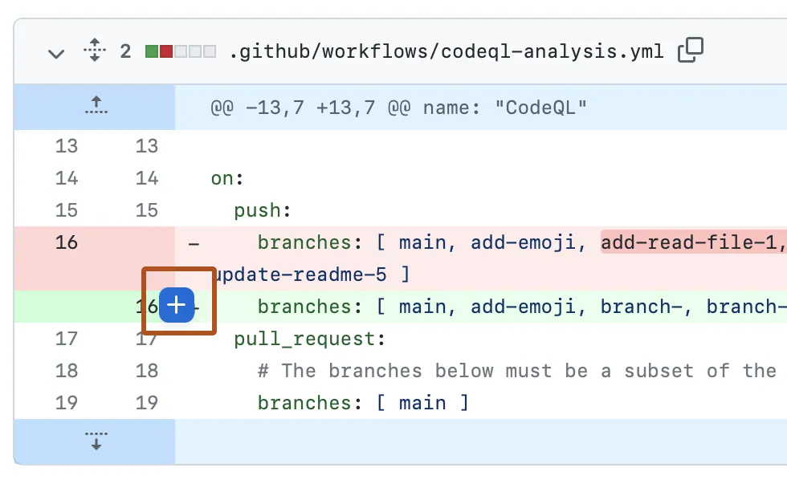
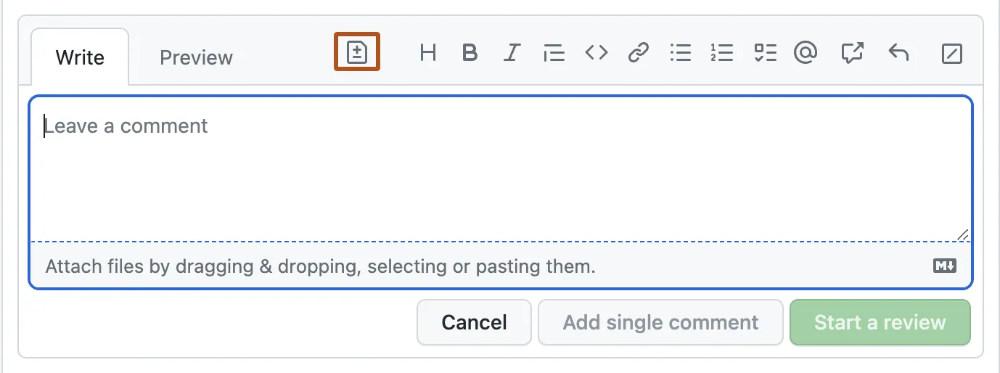
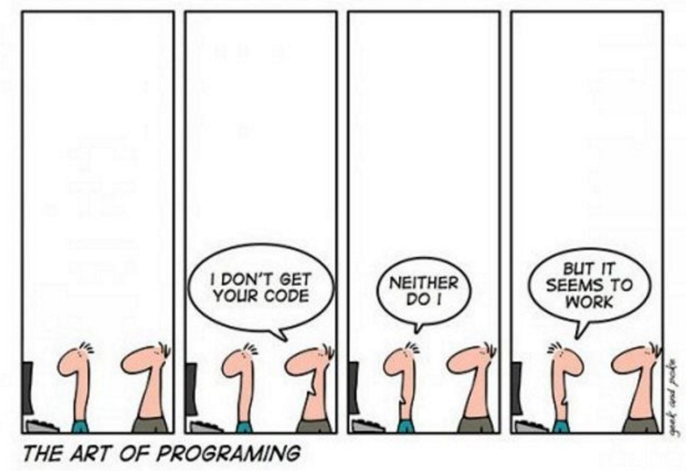

Accuracy
Accuracy refers to the correctness and precision of written code in executing its intended functions without errors or unintended consequences. Below we discuss three practices that promote accuracy, particularly in collaborative environments typical of RFF projects:
- pseudocoding,
- testing and debugging during code development, and
- code review.
1 Pseudocoding
Pseudocode is a step-by-step, high-level description of an algorithm written in plain English. It resembles a programming language but is not actual code. Its main purpose is to help researchers clarify and organize the logical structure of a complex algorithm before writing any executable code. In a research team, pseudocode also facilitates consensus among collaborators. The author of the pseudocode does not have to be the person who eventually writes the code, but all collaborators should review and agree on the pseudocode before it is translated into a programming language.
We recommend using pseudocoding in situations where shared understanding is the primary goal, such as collaborative learning, planning or reasoning through complex analytical tasks, and jointly establishing methodological choices before implementation.
Example: psuedocode and code
Psuedocode
# Goal: Download migration data for years 2011-2021 from IRS website and save to disk
Load libraries
Set working directory
# Create function to download to IRS data
download_irs_data <- function(IRS data year, file destination) {
url <- Web address to IRS data for IRS data year
download file at url and save to file destination
}
# Execute function for years 2011-2021
dst <- selected destination
create dst folder if it doesn't already exist
for year in 2011-2021 {
download_irs_data(IRS data year = year, file destination = dst)
}
Code
# Load necessary libraries
library(dplyr)
library(tidyr)
library(readr)
# Set the new working directory to path where script is saved
setwd(dirname(rstudioapi::getActiveDocumentContext()$path))
# Function to download IRS inflow migration data
download_irs_data <- function(year1, dst) {
year2 <- sprintf("%02d", (year1 + 1) %% 100) year1 <- sprintf("%02d", year1 %% 100)
link <- sprintf("https://www.irs.gov/pub/irs-soi/countyinflow%s%s.csv", year1, year2)
download.file(link, sprintf("%s/countyinflow%s%s.csv", dst, year1, year2))
}
# Download inflow data for years 2011-2021
dst <- "migration-data"
dir.create(dst, showWarnings = FALSE, recursive = TRUE)
lapply(seq(11, 21), download_irs_data, dst = dst)
2 Testing and debugging during code development
Robust code development requires systematic attention to both testing and debugging. Debugging is essential not only when execution halts with an error, but also to ensure that the program achieves its intended purpose. Code that runs without syntax errors may still contain flawed logic and produce misleading results. As best practice, each step of the analysis should be tested and verified. While the exact approach depends on the analysis, systematically checking intermediate outputs and validating assumptions at every stage helps identify and resolve errors early, improving the reliability of the final results.
Here are some general best practices:
Pay attention to error and warning messages.
Software systems often provide error and warning messages that indicate where and why a problem occurs. These messages can guide you toward a fix. Even warnings that do not stop execution may flag subtle issues that could lead to incorrect results later.Use logs and diagnostic print statements. Temporary print statements or structured logging can help verify assumptions, inspect intermediate results, and identify where errors arise during code development. In long or computationally intensive loops, logging can be useful for tracking progress, diagnosing performance bottlenecks, and pinpointing the specific step or iteration that is failing.
Test incrementally.
Build and run code in small, manageable pieces rather than writing long scripts all at once. This makes it easier to isolate where problems occur. Individual functions should also be validated using test cases with known inputs and expected outputs.Inspect intermediate and final outputs.
Review summaries, counts, and simple plots at key steps to confirm that data transformations behave as expected. Unexpected values, incorrect data types, missing data, or extreme outliers often indicate problems in earlier processing steps and should be investigated before proceeding.Check data dimensions.
Keep track of the number of rows and columns in your data, especially after merges, joins, reshaping, or filtering. Unexpected changes in dimensions often signal data loss, duplication, or unintended filtering.
Also see Quality and Preparation under Data Management for related discussion.
3 Code review
Code review is the practice of having a colleague—someone other than the original author—examine major coding components. This process supports mutual learning, helps catch bugs early, and identifies opportunities for improvement. We recommend setting up a code review system at the start of a project so that review becomes a regular and expected part of the workflow.
Code Review Approaches
Code review can take different forms depending on the team’s workflow and preferences:
- GitHub pull requests.
Pull requests are a GitHub feature that allow programmers to propose changes to the code and request feedback before merging. This is often the most efficient and structured way to conduct review for teams using Git. Reviewers can add comments directly on specific lines of code within a pull request. Also see Pull Requests under Version Control for related discussion.


Source: Reviewing proposed changes in a pull request
Written feedback. For relatively straightforward code or experienced programmers, reviews can be exchanged through email or other written channels.
In-person meetings. When code is complex and requires alignment among team members, in-person walkthroughs can cut down on written exchanges.
Pair programming. Two programmers collaborate directly on a single script. This method is especially valuable as a hands-on learning opportunity for less experienced team members.
Replication. A team member reruns the analysis to verify that results are reproducible. This provides strong assurance of transparency, though full replication may be impractical for code with very long runtimes—in such cases, partial replication can still be useful.
Check output. A reviewer inspects key outputs—such as tables, figures, or summary statistics—to confirm they make sense given the intended analysis.
Whichever method is used, it is important to ensure that all team members have access to the code base and that review responsibilities are clearly assigned.
Code review checklist

When reviewing code, consider the following:
- Correctness: Does the code do what it’s supposed to? Are edge cases handled?
- Clarity: Are variable and function names clear? Is the logic easy to follow?
- Reproducibility: Can someone else run the code with the provided inputs and get the same result?
- Efficiency: Is the code written in a reasonably efficient way (avoiding unnecessary loops or redundancy)?
- Consistency: Does the code follow agreed formatting, naming, and documentation conventions?
- Documentation: Are inputs, outputs, and assumptions documented? Are comments clear and useful?